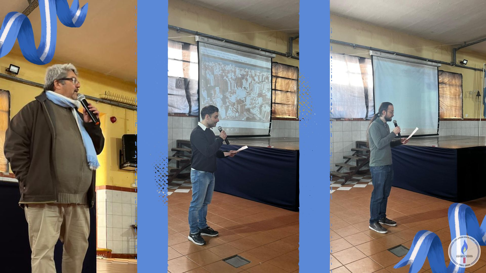

Acto en conmemoración del 9 de Julio - Día de la independencia de Argentina
Por: Jazmín Antúnez y Gabriela Azuaje

El día 7 de julio, hubo un acto en representación sobre la independencia de Argentina (9 de julio). En el cual participaron todos los cursos, acompañados con un discurso del profesor Víctor Zanon y dirigido por Fernando Fariña. Dando paso a las banderas de ceremonia junto al himno argentino. Germán Catallin fue el encargado de dirigir un coro de la canción “Himno de mi corazón” de Los Abuelos de la nada. Luego unos estudiantes hicieron un baile llamado el “Carnavalito”. Para finalizar este acto, el rector de nuestra escuela secundaria, Ricardo Barboza, dio unas palabras a modo de cierre del acto.
Leer otras notas
Donacion de Sangre con el Hospital Italiano
Museo de Anatomía JJ NAON UBA 2º B
Publicidad